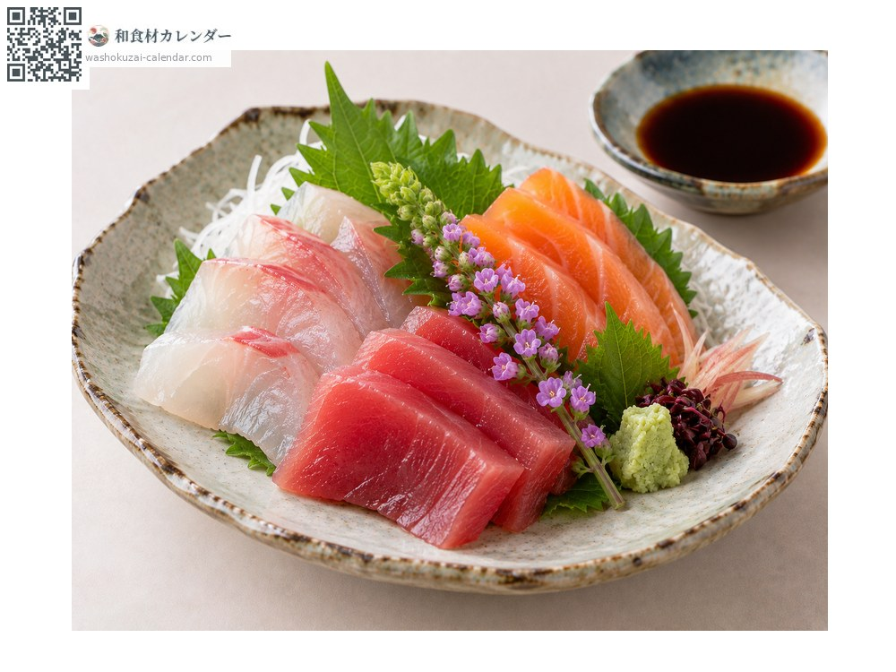
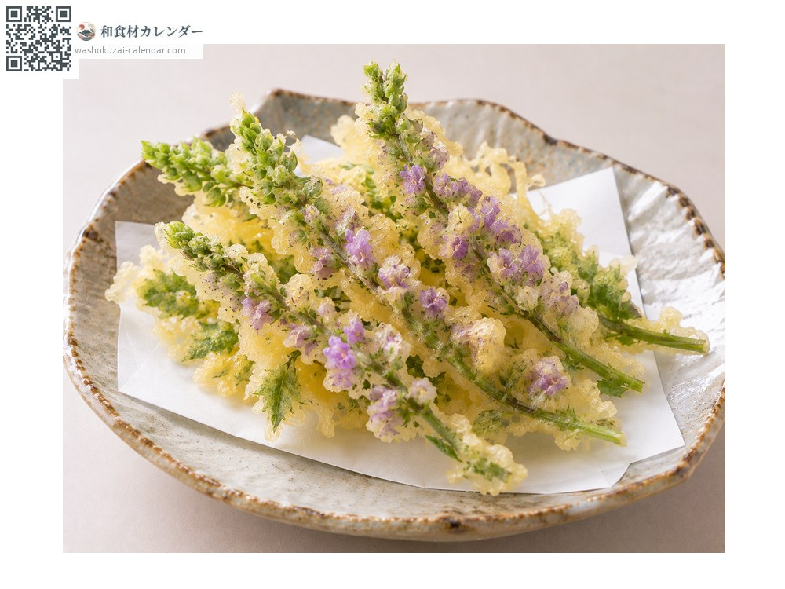
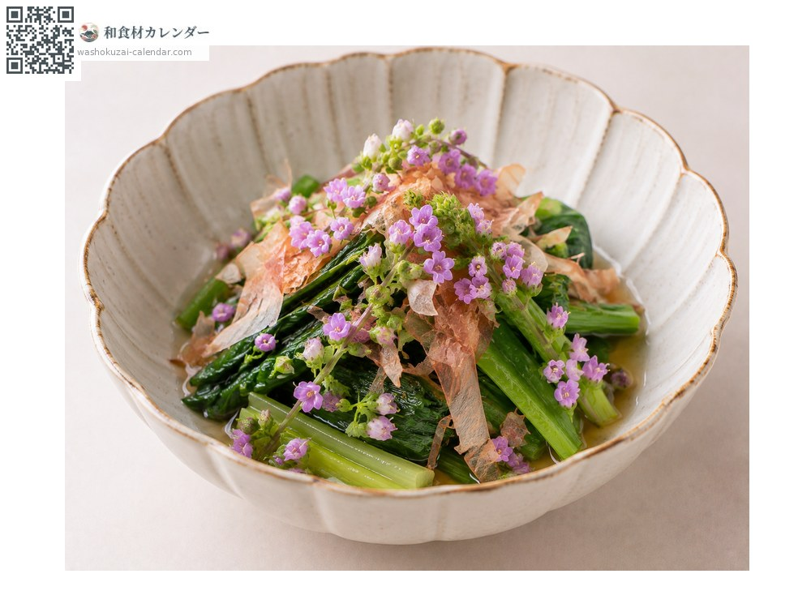

ผัก
ช่อดอกชิโสะ
花穂 はなほ hanaho
ชื่ออื่นhanaho, hanahojiso
อร่อยที่สุดในเดือน ก.ย., ต.ค.

ช่วงที่อร่อยที่สุด
ม.ค.
ก.พ.
มี.ค.
เม.ย.
พ.ค.
มิ.ย.
ก.ค.
ส.ค.
ก.ย.
ต.ค.
พ.ย.
ธ.ค.
ช่วงอร่อยที่สุดมีจำหน่าย
วิธีปรุง

เครื่องเคียงซาชิมิ
รูดดอกลงในซีอิ๊วด้วยตะเกียบ ให้ทั้งกลิ่นหอมและสีสัน

เทมปุระ
ชุบแป้งบางแล้วทอด รูปทรงของดอกยังคงอยู่

ใส่ในอาหารคลุก
โรยดอกที่รูดแล้วลงไป ใช้เพิ่มกลิ่นหอม
วิธีเลือก
ดอกบานประมาณครึ่งล่างของช่อ ไม่บานเกินไป ก้านดูสดชื่น
วิธีเก็บรักษา
ไม่ทนความแห้ง ห่อกระดาษชื้นแล้วปิดสนิทแช่เย็น ใช้ภายใน 2-3 วัน
แหล่งผลิตหลัก
เกร็ดน่ารู้
คือช่อดอกของต้นชิโสะที่เริ่มบาน มีทั้งชิโสะแดงและชิโสะเขียว ซาชิมิมักใช้ชนิดแดง เก็บก่อนที่เมล็ดจะติด กลิ่นจึงละเอียดกว่าช่อเมล็ด ปลูกในโรงเรือนจึงมีตลอดปี